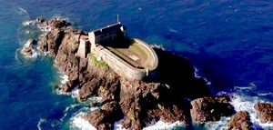
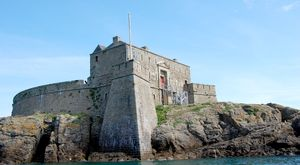
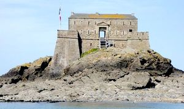
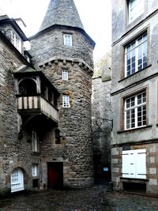
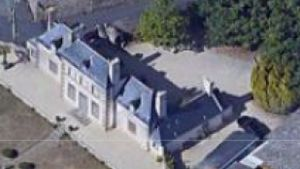
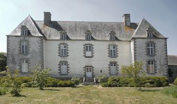

Recensement Jean-Claude Truffet
| Département | 35 — Ille-et-Vilaine |
| Canton | Saint-Malo |
| Commune | St_Malo |
| Type d'édifice | Fort |
| Période d'origine | XVI-XVIII |
| Coordonnées GPS | 48° 39' 2,3" Nord, 2° 01' 43,65" Ouest 48° 39' 08" Nord, 2° 02' 00" Ouest GPS : 48° 39' 09" Nord, 2° 02' 19" Ouest Bosc GPS : 48° 36' 22" Nord, 1° 59' 52" Ouest Giclais GPS : 48° 37' 41" Nord, 1° 59' 48" Ouest |






Trois édifice dans cet article, Maison duchesse Anne, Petit Bé, et Giclais et Rivasselou. SAINT-MALO-PETIT-BE, l'île du Petit Bé ou Bey et son fort , des remparts de Saint-Malo et à quelques dizaines de mètres du Grand-Bé. Le Fort a été construit au XVIIe siècle. Il faisait partie d'une ceinture défensive conçue par Vauban et destinée à protéger la ville de Saint-Malo d'attaques des escadres ennemies anglaises ou hollandaises. Cette ceinture comprenait également le fort National, le fort Harbour, le fort de La Conchée. Les forts ont été construit par l'ingénieur malouin Siméon Garangeau. Il se compose dune vaste plateforme, dun bâtiment sur trois niveaux et de deux bastions et pouvait accueillir jusqu'à 160 soldats pour servir 19 canons et 2 mortiers. Propriété de l'armée française jusquen 1885, il est ensuite déclassé et redonné à la ville de Saint-Malo. Il est classé au titre des M.H. par arrêté du 29/10/1921, mais qui fut délaissé jusqu'en 2000, l'année où la ville signa un bail avec une association pour sa rénovation et son ouverture au Public. Le Petit Bé est ouvert au Public et se visite, à marée basse. Il fut délaissé jusqu'en 2000, année où la ville signa un bail avec une association pour sa rénovation et son ouverture au Public. L'île du Petit Bé (ou Bey) et son fort se situent à quelques centaines de mètres des remparts de Saint-Malo et à quelques 10 mètres du Grand Bé. RIVASSELOU, cet édifice, construit en 1789, s'inspire directement du modèle de la malouinière, avec corps central comprenant les pièces nobles, flanqué de deux pavillons plus bas, cour séparée du jardin par le mur de clôture, architecture symétrique, sans décor. Les pièces du rez-de-chaussée ont conservé leurs lambris Louis XVI. Éléments protégés MH : la malouinière, à savoir : le logis principal, les terrasses du jardin, le mail avec son pavillon néo-classique et le mur de clôture : inscription par arrêté du 13 juillet 2000.
GICLAIS, sa construction date du XVIIe siècle. Cette malouinière, entre la cour et le jardin, est élevée d'un étage, sur un rez-de-chaussée et un comble. Les baies sont entourées de granit. Le corps de logis principal est flanqué, sur chaque face, de deux courtes ailes. Les communs datent de la même époque. Durant la Révolution Française, le Manoir a été transformé en remise à chevaux, ce qui fit beaucoup souffrir les intérieurs. La propriété revint, en 1807, à Nicolas Surcouf, corsaire et armateur, comme son frère cadet Robert Surcouf, célèbre corsaire malouin. Une partie des boiseries et des papiers peints panoramiques du Second Empire sont conservés au rez-de-chaussée et au premier étage. Il est inscrit aux M.H. depuis le 30/03/1976. Maison de la duchesse ANNE, cette maison, qui faisait partie de l'enceinte primitive, a été surnommée Maison du Cheval Blanc ou Maison de la Duchesse Anne. Suivant la tradition, la souveraine y aurait logé lorsqu'elle vint surveiller les travaux du château. Elle occupe l'emplacement de l'entrée de l'ancien Château-Gaillard démoli en 1573. La tradition ne peut donc être vraie que si cette maison faisait partie du Château-Gaillard. Catherine de Médicis y aurait également séjourné en 1570. La maison a été incendiée en 1944. Elle présente une fenêtre à linteau chanfreiné, surmontée d'une archivolte en accolade et quelques appuis sculptés. Elle est flanquée d'une tourelle d'escalier circulaire à sa base, octogonale à son sommet, avec mâchicoulis. La partie inférieure pourrait être plus ancienne que la partie haute.
ingénieur malouin Siméon Garangeau Giclais ; Famille de Nicolas Surcouf Bos ; Famille de Bret
"
Trois édifice dans cet article, Maison duchesse Anne grav-4, Petit Bé grav -1-2-3, Rivasselou grav-5, et Giclais grav-6 . Petit Bé GPS : 48° 39' 2,3" Nord, 2° 01' 43,65" Ouest 48° 39' 08" Nord, 2° 02' 00" Ouest GPS : 48° 39' 09" Nord, 2° 02' 19" Ouest Bosc GPS : 48° 36' 22" Nord, 1° 59' 52" Ouest Giclais GPS : 48° 37' 41" Nord, 1° 59' 48" Ouest